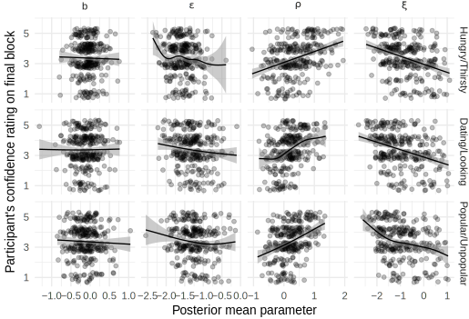

- Transition from quiescent childhood to adulthood
- Avoidable health-risks increase
8/6/2018
The importance of adolescence
Lenses for understading adolescence
- “Imbalanced” brain-system development (Casey et al., 2016; Shulman et al., 2016)
- Need for exploration (Romer et al., 2017)
- Social reorientation toward peers (Nelson et al., 2016)
- Can we get more specific about functional relevance of behavior?
Status and Mate-seeking
- Sexual activity as a risk-factor
- Popularity: antecedents and consequences
- Status and Mate-seeking as developmentally appropriate goals
- Motives encourage behaviors that satisfice them
- How much of adolescent decision making is in service of these motives?
- To know we need to measure them.
Measuring social motives in the lab
- What might be influenced by differences in motivations?
- Attentional learning: cue salience influenced by past predictive value (Kruschke, 2011; Mackintosh, 1975)
- Information relevant to social motivations should be learned more quickly
The Social Probabilistic Learning Task (SPLT)

- Association between each of 6 faces with one of 2 words
- Hungry/Thirsty
Dating/Looking
Popular/Unpopular - Each trial
press \(\leftarrow\) or \(\rightarrow\)
receive feedback - Probabilisitic: Best answer rewarded 80%
- 8 blocks x 8 trials x 6 faces = 384 trials
Aims
- Does this “motivational framing” enhance learning?
- Does motive-related learning enhancement covary with development as we would expect?
- Does learning enhancement relate to self-report motives?
Participants
| Sample | N Male | Female | Age Male | Female |
|---|---|---|---|---|
| Foster-care adolescents | 19 | 20 | 15.6 (1.5) | 17.0 (1.7) |
| Community adolescents | 29 | 36 | 15.5 (1.5) | 15.6 (1.7) |
| College Students | 33 | 52 | 20.9 (4.2) | 19.3 (1.3) |
| College Students Online | 37 | 104 | 19.8 (1.4) | 19.3 (1.2) |
- 313 participants provided task data (334 - 21 missing)
- N=13 missing were from the foster-care adolescent sample
Participants Pubertal Development

Approach to modeling task behavior
- Lo-fi: Average number of optimal decisions during last 1/2 of the run.
- H1: More optimal decisions in motive-conditions
- H2: Size of difference will be bigger in more developed participants
- H3: Size of difference will +correlate with self-report motives
- Formal: Rescorla-Wagner iterative learning model
- Model paramter differences between conditions
- Explore individual differences
Low-fi: Does motive-framing enhance learning?

D/L
t(185) = 2.69,
D = .029
p = .008
P/U
t(185) = 4.54,
D = .047
p = .00001
Modeling using iterative instrumental learning
Probability of pressing \(\rightarrow\) on each trial is determined by an action weight.
Action weight is a function of:
- Right-bias \(b\) - Some people might just be prone to (not) pressing \(\rightarrow\)
- “Noise” \(\xi\) - Random responding (attention, hurrying, lower ability)
- Reward-value \(\rho\) - How rewarding are those points you get?
- Learning-rate \(\epsilon\) - How much are you affected be each trial?
Learning rate differences

3: Popular/Unpopular; 2: Dating/Looking; 1: Hungry/Thirsty
Reward sensitivity differences

3: Popular/Unpopular; 2: Dating/Looking; 1: Hungry/Thirsty
Irriducible noise differences

3: Popular/Unpopular; 2: Dating/Looking; 1: Hungry/Thirsty
Right-bias differences

3: Popular/Unpopular; 2: Dating/Looking; 1: Hungry/Thirsty
Aim 1 Summary: Motive effects on learning
- Overall better learning in motive conditions
- Possibly due to higher learning rate, lower noise
Correlations with development
Does learning enhancement reflect motives that, ostensibly, develop during adolescence?
Indices of development:
- Age
- Pubertal Development Scale (Petersen et al., 1988)
Optimal choice performance and age

Optimal choice performance and puberty

Model parameters and age

Model parameters and puberty

Aim 2 Summary: Motive effects and development
- Condition-differences similar at different ages & PDS scores.
- More developed participants perform better…
- …likely due to less “noise” (\(\xi\)).
Correlations with self-report motives
Does learning enhancement reflect motive differences as measured by self-report?
Measures related to social motives (College samples only)
- Fundamental Social Motives Inventory (FSMI; Neel et al., 2015)
- Dominance & Prestige Strategies (D&P; Cheng et al., 2013)
Measures related to social motives (All samples)
- Kids’ Social Reward Questionnaire (K-SRQ; Foulkes et al., 2014)
- Urgency and Sensation-Seeking (UPPS-P; Whiteside et al., 2005)
nb: all analyses done using latent variable measurement models
College samples

All samples
Aim 3 Summary: Motive effects and self-report motives
- No significant correlations with convergent measures.
- All \(|r| < .2\) (many “significantly” so)
General conclusions
- Learning is affected by “motive” framing
- Individual differences don’t behave as expected
- One possibility: these motives don’t develop during adolescence
AND
Self-report measures don’t measure motives - Another possibility: the task effect is not the result of motives, per se
- Descriptors vary along many possible dimensions
- One more: individual differences in the task are badly measured
- One possibility: these motives don’t develop during adolescence
- We did learn something about reinforcement learning
These results in context
- Generally, adults, or young adults, perform better than adolescents or children1
- This study is the largest cross-sectional, and second to @peters2017 longitudinal
- Some author propose that purported hightened reward sensitivity during adolescence may enhance learning.
- Scant evidence in the literature [@davidow2016]
- No evidence of adolescent-specific benefit
- No evidence of adolescent-reward sensitivity (e.g., \(rho\))
- Very little work on instrumental learning of social information in adolescence.
1 @duijvenvoorde2008; @decker2015; @bos2009; @cohen2010; @christakou2013; @palminteri2016; @rosenblau2017; @peters2017; @mccormick2017.
Thanks to…
My committee: Jenn Pfeifer, Sanjay Srivastava, Elliot Berkman, Nicole Giuliani
All 334 participants
TDS Study Coordinators: Maurine Durnin, Garrett Ross
Research assistants: Emily Talbot, Marina Parker, Hannah Fraser, Cameron Hansen
The DSN and PSD Labs
Summary of conclusions
- Learning is affected by “motive” framing
- Individual differences don’t behave as expected
- Behavior/development correlations are consistent with previous literature
Extra slides follow
Individual-level parameter correlations

Individual-level parameter and behavior

Individual-level parameter confidence

Epsilon chains

Rho chains

Xi chains
b chains
Model predictions through identical runs

Model predicted versus observed proportions
Learning enhancement with Age
\(\beta_{\text{adolescent}} = .08;\beta_{\text{college}} = .01\)
Learning enhancement with Puberty

\(\beta_{\text{adolescent}} = .03; \beta_{\text{college}} = .02\)
Model condition differences and Age

Model condition differences and Puberty

K-SRQ and age

K-SRQ and PDS
UPPS-P and age

UPPS-P and PDS
FSMI Mate-seeking

FSMI Mate-seeking

Baseline task correlations - College

Baseline task correlations - All

Baseline task correlations - All

Var prop due to posterior means
Variance among posterior means for individual-level parameters versus total variance in posteriors:
.37, and the rest .45 - .56
For raw behavior, roughly:
H/T: 0.24, \(\Delta\)D/L: 0.13, \(\Delta\)P/U: 0.14
\(\epsilon\) individual differences
\(\rho\) individual differences

\(\xi\) individual differences

\(b\) individual differences